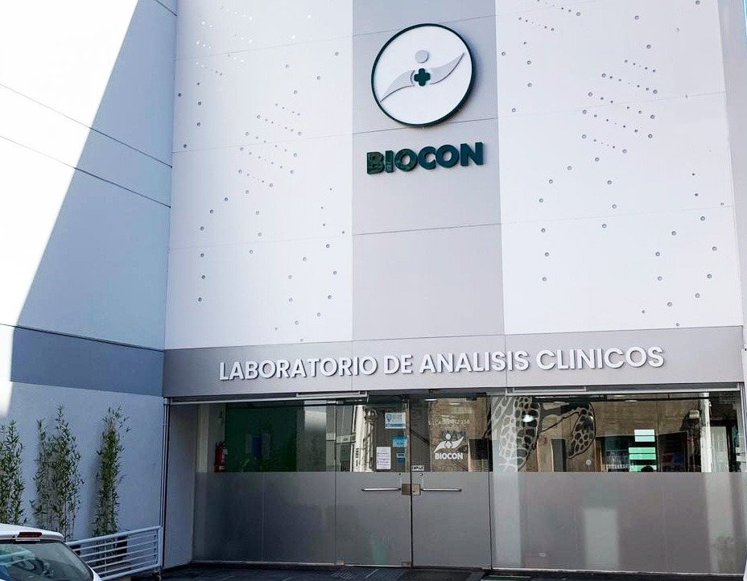
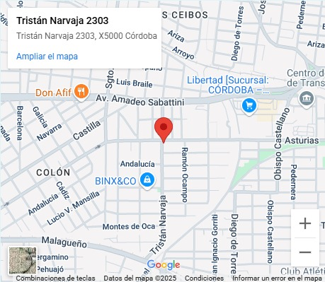
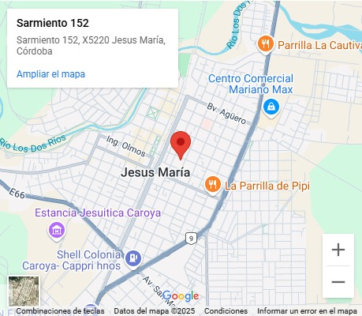

Inicio
Nosotros
Productos
Sucursales
Contacto
Sucursales
Encontranos en nuestras distintas sucursales:
Casa central: San Jose De Calasanz 258

Zona sur: Tristan Narvaja 2303 - Esquina Asturias

Casa central Jesus Maria: Sarmiento 152
